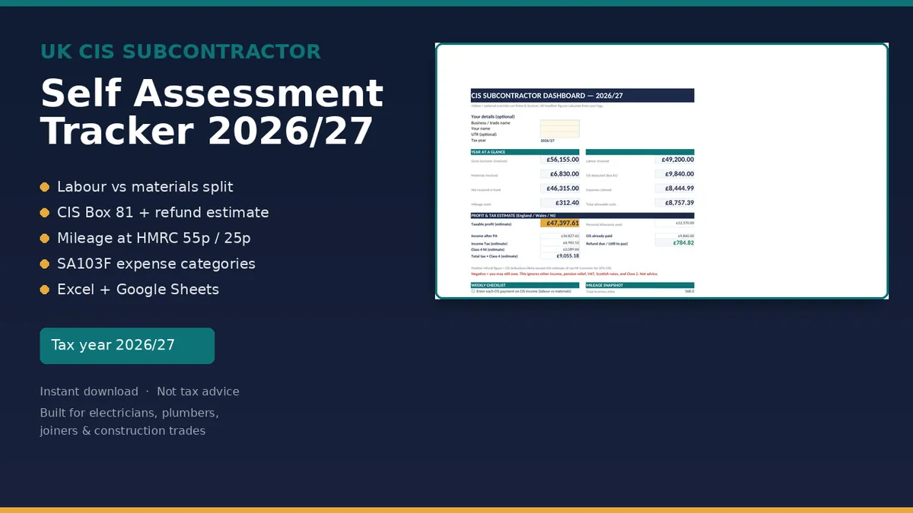
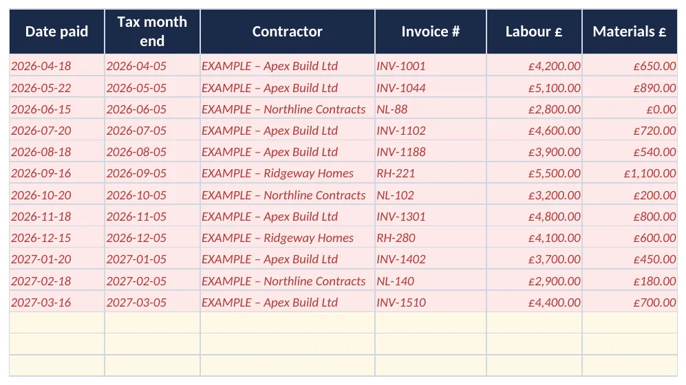

CIS
UK CIS Subcontractor Self Assessment Tracker 2026/27
Contractors take 20% (or 30% if you are not registered) off your labour. That money counts towards your tax and National Insurance, but only if your records show the gross, the split and the deduction. This workbook keeps those records for the tax year 6 April 2026 to 5 April 2027.
Price on Gumroad
£14.99
Buy on GumroadLAUNCH25 takes 25% off until 31 Oct!!
Estimate, not tax advice. It is a record keeping template, not HMRC filing software. Check the rates on GOV.UK before you file.

Who it's for
- Sole trader electricians, plumbers, joiners, bricklayers, plasterers, groundworkers and similar trades paid under CIS.
- Anyone who gets CIS payment and deduction statements and needs the figures for Self Assessment.
- People who want Excel or free Google Sheets rather than accounting software.
What's included
- Dashboard: turnover, CIS deducted (Box 81 style), expenses, mileage, estimated Income Tax and Class 4 NI, and refund due or still to pay.
- CIS Income: one row per payment, labour and materials split, a 0%, 20% or 30% rate dropdown, the deduction and net received.
- Expenses: SA103F style category headings, with business use % and the amount claimed.
- Mileage: HMRC rates of 55p for the first 10,000 miles then 25p, plus motorcycle and bicycle rates.
- Statements: a chase list so missing contractor statements turn up before January.
- Quarterly: MTD style period totals. Records only, you still need bridging software to submit.
- Rates & Sources: every figure with the GOV.UK page it came from.
- Instructions and pink EXAMPLE rows you delete when ready.
An .xlsx download that works in Excel, Google Sheets and LibreOffice. No macros.
What it isn't
- Contractors who pay subcontractors and file monthly CIS returns. The contractor tracker does that.
- Limited company CIS setups that need full payroll software.
- Anyone who wants software that files to HMRC. No spreadsheet can do that.
Preview

Free calculator
Want a quick figure first? No sign up.
CIS subcontractor tracker: £14.99 on Gumroad
Estimate, not tax advice. It is a record keeping template, not HMRC filing software. Check the rates on GOV.UK before you file.
More templates
- CIS contractor tracker £14.99
- Mileage and expenses log Lite Free, pay what you want (£0+)
- Both sides of CIS bundle £21.99
- Executor and probate tracker £19.99
- Gifts and IHT 7 year tracker £12.99
- Freelancer time, invoice and late payment tracker £14.99
- Sales dashboard and VAT threshold watch £12.99